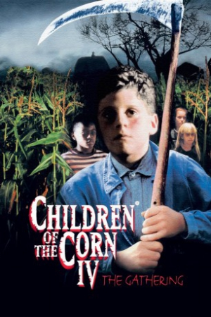

Country:United States, 85 minutes
Spoken languages:English
Genres:Horror
Director(s):Greg Spence
Writer(s):Greg Spence, Stephen Berger
Video Codec:Unknown
Number: 2712


Certification:R
Storyline:
A bright young medical student must solve the frightening mystery that plagues the children of a small Midwestern town.
Cast:

Medium: Original DVD,
Comments: Part of: Children of the Corn - 6-movie Collection
Loaned: No
Aspect ratio: Unknown